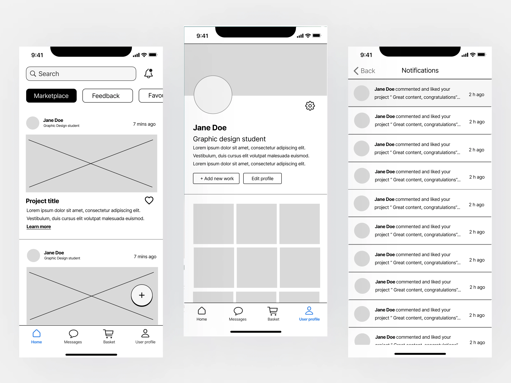
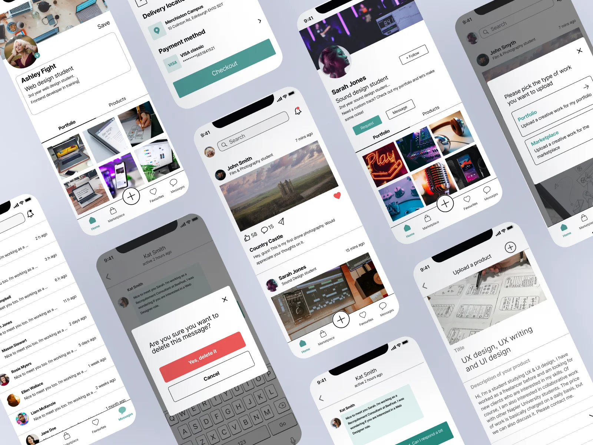

Akindo: A Creative Student Platform - A Comprehensive User-centred Case Study
Akindo is a dynamic mobile marketplace app that empowers student creativity. With Akindo, students can showcase and sell their exceptional work across various fields, including graphic design, illustration, music, 3D models, and motion design, among others. This innovative platform also provides a dedicated section where industry professionals and university lecturers can provide invaluable feedback on works-in-progress, ensuring students can hone their craft and reach new heights of excellence.

Project Details
Industry: m-Commerce
Project duration: 4 months
Deliverables: UX Research, Questionnaires, Interviews, Usability Testing,
Analysis, Wireframing, Prototyping
Team: Iliyana Pirinska, Catherine Campbell, Junko Smith, Cristian Zennaro,
Karolina Lencina
My role
-
Lead UX/UI Designer
-
UX/UI Researcher
Introduction
The present project was undertaken in collaboration with four other Web
Design & Development students. As part of our 'User-centred
Organisational Systems' module, we meticulously conducted user-centred
research methods and conceptualized a platform based on our analysis.
The project will present both my soft and hard skills in terms of
teamwork, collaboration, organisation, design, research and testing.
Data-gathering methods
Our approach involved a rigorous application of three data-gathering
methods - Questionnaires, Interviews, and Unmoderated Usability
testing . The questionnaire was instrumental in providing us
with
critical insights into the anticipated platform features, as well as how
other stakeholders, including University staff, IT staff, Alumni, and
buyers, might potentially interact with the platform. By utilizing the
questionnaire findings, we could enhance our low-fidelity sketches and
incorporate new ideas into our features.
Through the use of interviews,
we were able to obtain in-depth information on users' experiences and
expectations regarding the platform. Finally, we implemented
high-fidelity wireframes and conducted usability testing to ascertain
users' ability to navigate easily throughout the app.Collectively,
these three methods helped us establish, improve, and upgrade our
project, ultimately culminating in an evidenced user-centred
organizational system.
The team & my role
I was part of a team of five people - Junko Smith, Cristian Zennaro, Karolina Lencina, Catherine Campbell, and me. As for the roles, we decided that each would practice the methods to gain better insight and learn more about data gathering individually. However, there were tasks that each of us felt more comfortable doing and took responsibility for delivering them on time. For example, as I was most experienced in working with Figma, I took care of the file organisation, used the low-fidelity wireframes the team designed and turned them into high-fidelity prototype ones and structured the Usability testing.
Organisation
As for the data gathering platform, we decided to use Figma because we could store all data formats easily. Additionally, we used Notion for task management and WhatsApp for non-verbal communication. We had meetings each Monday evening at Microsoft teams. During our team meetings, every member presented the work done during the weekend, gave each other’s feedback and then discussed the possible next steps. Additionally, we used the module's practical session on Friday to brainstorm, collaborate and analyse the research findings.
Ideating & Voting
We decided that each of us needs to come up with 1-2 ideas for an organisational system until week 3. On our Monday meeting in week 4, we presented and discussed our ideas. I suggested the team to use a simple voting widget to visualise each member opinion. There were a couple ideas with the same voting, so we decided to use alignment scale widgets to see to what extend each of us likes the idea. As a result, we decided to work on the Creative Student Auction Platform concept that Junko suggested. We all agreed that it might be a challenging organisation system to research for, but it would help us enhance our soft and hard skills.
Research Space
In week 4, Catherine and I decided to create a research space where each member of the team would be able to put their findings on similar app layouts, colour palette, typography, design inspiration and low-fidelity wireframes. The team liked the idea and started filling their frames.
Notion - Task Management
We used Notion to track our main tasks we had to do connected to research, questionnaire, email updates, interview, and usability testing. There were many minor tasks that each of us did connect to the app design and organisation that was communicated through comments in Figma.
Quesionnaire
The section will present the research method through STARL format.
-
Situation
During our practical class in week 3, we decided that our first research method would be a questionnaire, which would help us profile our target audience, learn about their experience with online marketplaces and gather insight into how the potential stakeholders would use the platform. We identified five types of stakeholders for our organisational system - students, university staff (lecturers, demonstrators, assistants), Alumni, non-students (potential buyers) and IT staff. The targeted stakeholder group for my questionnaire target audience was the IT staff that would maintain the platform. -
Task
My task was to research and come up with approximately ten questions that would help the team understand how the IT staff will maintain the platform and what steps they will take to ensure users' privacy and confidentiality. The IT staff questionnaire was the hardest one as it would require technical knowledge and questions appropriate to the tasks they would perform through the platform. We had to create our questionnaires through Office Forms as it provided the needed features for free. Then, I had to present my work to the team, receive feedback and refine the questionnaire based on their comments. -
Action
Firstly, I read the provided module materials connected to questionnaires, advising how to ask the correct questions and then how to analyse the responses. I had an idea of the questions I wanted to ask, so I quickly added them to the Forms platform in a logical order. While, presenting IT to the team, I realised that I made a questionnaire mainly for a developer’s team that would build the platform rather than the people who would maintain it. Consequently, I recreated my questionnaire, but this time I structured the questions based on research about the most common responsibilities the IT staff of marketplace platforms have. We helped each other with proofreading and identifying double-barreled questions, which helped us refine our questionnaires. We made the introduction as well as the structure of the repetitive questions the same in all questionnaires, so we keep them consistent Additionally, I did pilot with a software engineer student, who helped me identify one ambiguous question. I emailed the ISService Desk of Napier University asking if they could connect me with the IT staff or pass my questionnaire to them. -
Result
I received an email from the service desk that the questionnaire was sent to the IT staff and approved by the university director. Unfortunately, a week later, I had only two responses with quite different answers. I decided to find my targeted stakeholders outside of our university and do snowball sampling by contacting three other companies There were many insights that we got from their answers. Most respondents chose email as a method of communication and 1-3 days for technical support, so we decided not to have a forum or a 24/7 chat feature. Moreover, they ranked the tasks "investigating reported accounts" and "solving technical issues to individuals" as the ones with the highest frequency. Other insights that helped us enhance our concept were the payment methods the platform will need and the commission fee of sold products - 5%. There were good suggestions for ensuring there is no copyright infringement - create reporting portal, perform spot checks, Google reverse image search, having strict terms & conditions. -
Learned
One of the crucial things I learned is to do specific research on the targeted audience. If I did the research before writing the questions, I would not need to create a new questionnaire, as it would have saved me time and effort. The research helped me identify the questions that were not valuable (needed finances, development time, project duration) and the ones that I had to ask (commissions fee, method of communication, most frequent tasks). Another thing I did not expect was the time needed for gathering responses. Piloting and the team’s feedback helped me identify confusing questions, which are steps that I will include in my research process from now on. As for the group questionnaires, I think that the fact that we had to create five questionnaires in a short period of time disabled us from polishing all questions. As I analyse the questionnaires now, I see that there are questions that are not structured well, which would have been avoided if we initially decided to focus on the one or two types of stakeholders instead for covering all. -
Final Questionnaire link
Click here to open the questionnaire
Interview
The section will present the research method through STARL format.
-
Situation
In week 8, we started discussing the interview questions we wanted to ask for our interviews.They would help us in gathering more in-depth information about the target audience's experiences and expectations and opinion. We discussed that it might be best to focus on our main stakeholders (students) for the interviews as they will mainly use the platform. To ensure we approach this correctly, we discussed that with the module lecturer and assistant, who approved that decision. We wanted to use the questionnaire insights to discuss further topics like requesting feedback, setting a price, building a portfolio, and receiving service in exchange instead of payment. -
Task
Each of us had to come up with a couple of questions until Friday's practical class. Hence, we had to pick the ones we would use, do proofreading and organise them in sections. In addition, I had to create and refine the mid-fidelity wireframes. I had to look through each member's sketches and mix and match our favourite features, so we kept building and enhancing our user-centred organisational system. We decided to do a 30-minute semi-structured interview consisting of approximately ten questions. Each of us had to do one interview, analyse the participant responses, and present them to the team. Then, we had to draw insights from all answers and refine our wireframes based on their feedback. -
Action
All team members discussed the suggested questions during our Monday meeting. Consequently, I sent an email invitation to a one of the questionnaire participants (with an attached consent form) and scheduled a meeting on Microsoft Teams as it provides recording and transcription. The participant entered the meeting earlier, so we did a technical review to check if their microphone and speakers worked well. I kept a friendly tone, avoiding being biased. As the interview was semi-structured, I asked follow-up questions regarding the mobile mode they prefer, types of filtering, price negotiations and button labelling. -
Result
The participant said they enjoyed answering the questions and thanked me for giving examples that helped them think in-depth about the topics. Overall, the interview went smoothly without any misunderstandings. Hence, the recorded transcription was refined and presented to the team. We discussed the participants' answers and gauged insights from them. One of the main insights was that the users prefer to have a choice when considering receiving and requesting feedback, private and public profile, and types of filters. We found out that the "favourites" and the "notifications" buttons were not in their most appropriate place, so we decided to change their position. Moreover, most respondents liked the idea of accepting service instead of payment. However, my interviewee noted that this feature would mainly be used by first-year students who want to build their portfolios. Lastly, based on the review analysis, we understood that the best location for delivering printed works would be the JKCC lab for Napier students as it is open 24/7. These insights helped us refine our mid-fidelity prototypes and understand users' expectations of the platforms. -
Learned
While preparing and conducting this research method, I learned a lot about communication with potential users, structuring interviews and analysing results. The thematising step helped us identify the topic, objectives, and interview purpose. Going through the interview schedule together enabled us to reflect critically on the questions and omit the ones that did not make sense. Finding a participant willing to be recorded was a demanding task. We started by sending emails by randomly picking students that left their emails for further participation in the research. However, they did not respond, so we invited Napier students we knew personally. This experience showed us that participant sampling and communication take time which should always be considered. The interview lecture and practical classes helped me prepare for the interview by providing information on ethical considerations, communication manner, analysis, and documentation. I learned what should be the interviewer's attitude and how to make the participant feel comfortable. The interviewer should practice active listening, avoid making assumptions and control the interview. Additionally, it is crucial to prepare for the meeting by doing the technical checks, avoiding a noisy environment, and ensuring secured data storage. -
Interview Script


Usability Testing
Interview
The section will present the research method through STARL format.
-
Situation
At the beginning of the trimester, we thought direct observation would be the most suitable method for testing the prototype. However, while reading the materials for usability studies (week 9), I realised that unmoderated usability testing would be the best option for us as two of our team members were studying remotely. Hence, I suggested to change our plan and use Maze to conduct the testing. While discussing the third method with the module lecturer, we realised we could do moderated usability testing during our practical. This plan would make us practice both types of testing, gather responses from all potential users and be able to evaluate the pros and cons of both approaches. -
Task
First, we had to turn the mid-fi wireframes into high-fidelity ones. During our meeting, we discussed the user flows we wanted to test - purchasing a product, editing profile information, requesting service, etc. Each of us had to turn our assigned flow into a fully functional high- fidelity one. We had to structure the testing in Maze, send it to potential users and analyse the findings. The testing would enable us to check if the user experience is good and if the interface is user-friendly. -
Action
Structuring the testing took us a lot of time as there were missing connections and components from the screens. Consequently, we discussed the tasks and questions with the team and proofread them. We piloted the testing with potential stakeholders and found issues like small font size, missing connections, and wrong labels. Additionally, we wanted to add task shuffling but unfortunately Maze’s free plan did not offer it. I took the initiative to polish and publish the test. Catherine emailed the students who completed our questionnaire with the testing link and instructions. We used one of our practical classes to conduct moderated tests, enabling us to record the screen and audio. We asked the participants to speak aloud so we could afterwards understand easier their behaviour. At the end of the testing, we discussed how they found the testing. -
Result
The platform we used generated a report that included detailed metrics like heatmaps and usability breakdowns, which helped us make an in-depth analysis even for the unmoderated testing. The testing usability score is 76%, measuring the ease of the test (19 participants). The testing has seven tasks, consisting of 3-7 screens. The average miss-click rate is 22%. There were two tasks in which the participants experienced difficulties. The other five tasks have minimal miss-clicks and almost no bouncing. The participant had issues with the task asking the users to find switch off their email notifications. The heatmap showed us that some of them searched for it on the user profile (Figure 1).Other respondents reported that they knew where the settings button was because of the previous tasks.

The most challenging task required removing the oldest portfolio item they had saved. When asked, the participants said that they found the task description confusing and the sorting component small (Figure 2).

Overall, they commented that they liked the interface, and the app was easy to navigate. -
Learned
Based on the testing analysis, we decided that the settings should be in the user profile section. The research showed us that we need to increase the font size and the dimensions of the buttons. We realised the description of the "favourites section" task was confusing. I believe the issue occurred as this task did not go through piloting. While conducting this research method, I enhanced my skill of analysing user behaviour and drawing insights that help design user-centred interfaces.I boosted my critical reflection skills as I found gaps in the design stage that resulted in issues in some tasks. The unmoderated (remote) testing saved us time and effort and enabled us to test different types of stakeholders. However, we could not discuss the difficulties they experienced and had to assume things.
On the contrary, the moderated testing enabled us to ask questions after the participant completed all tasks. Moreover, we could record their mouse movement and voice, which helped us analyse their behaviour. The disadvantage is that the moderated one required more time to find participants and schedule the sessions. As for the research stages, I noticed that structuring the usability testing is time-consuming and realised the importance of piloting and proofreading.
View Analytics Report
Do Usability Testing
Logo
The app logo was created by Cristian. The logo forms the letter “A” of Akindo while recalling Japan for the origin of its name. It has white, red, and black colours, which are the colours of the Japanese flag as well as Napier logo, representing the relation of the app and the institution. Each member of the team really liked it, and we did not want anything to be changed.
Colour Scheme
We decided on a colour scheme for our creative student mobile app platform that includes a primary accent colour and several neutral colours. The accent colour, #4F9A95, was chosen to draw attention to key areas of the app, such as the students' feed and creative works. The neutral colours, including #292929, #828282, #F2F2F2, and #FFFFFF, were chosen to provide a clean and modern aesthetic while also allowing the accent colour to stand out. By using a limited colour palette, we aimed to create a cohesive and consistent user experience throughout the app. Overall, this colour scheme was chosen to emphasize the importance of the students' creative works and provide a visually appealing and user-friendly platform for their expression..
Initial Wireframing
During one of our online meetings, we discussed and created a list with five main screens that each of us had to sketch. A week later, we presented and discussed them. There were screens like Notifications, User profile and Settings that we all designed in the same direction. However, we had differences in the newsfeed and marketplace screens. Additionally, the biggest challenge for us was to identify our main sections and find their most appropriate place to put them – side menu or navigation bar.

Mid-fidelity Prototype
The mid-fidelity wireframes were created by me. There were two discussions during our practical and online meeting when I presented them and received feedback. I refined some of the sections and created other needed ones. Catherine took the initiative to create the requesting service feature, which we also discussed together and refined. Overall, each member of the team was satisfied with the result and approved that it visualised everyone’s vision of the platform.
High-fidelity prototype
The high-fidelity prototype presents all sections of the app. By building a high-fidelity prototype, designers can identify potential usability issues and make necessary adjustments before the final product is launched. This process helps to reduce costs and increase customer satisfaction, ultimately leading to a successful product launch.

Interactive Prototype
Key lessons
Structuring, refining, and analysing data on research methods takes time that need to be considered
Always ask for consent and do piloting step in all research methods
Alwyays do specific research on the target audience and look through the existing literature
Always do technical audits before interviews and practice appropriate interview behaviour
Conclusion
It was a pleasure to work with such creative
and hard-working individuals. Each of us contributed by giving ideas,
researching, and presenting insights that made the overall process
smooth and consistent. One of the things that I believe helped us
deliver broad research was that we are all from different countries
(Scotland, Italy, Bulgaria, Slovakia, and China), which gave us access
to more information and system examples. I enjoyed our online meetings,
where we critically reflected on each other’s work, which helped us
learn and grow.We used our personal strengths like creativity,
organisation, research, and communication to contribute to the project
deliverables and took equal responsibility for the research methods.
I enhanced crucial soft and
hard like teamwork, organisation, time management and research. What I
could do better was to practice my leadership skills and straight
communication. I acknowledged that with good
organisation and a hard-working team result in delivering the project
objectives on time. The research experience showed me the most promising path
to creating a user-centred design, which is to design with people, not
for people by conducting research.
Other Creative Works
Please feel free to explore other projects I have worked on